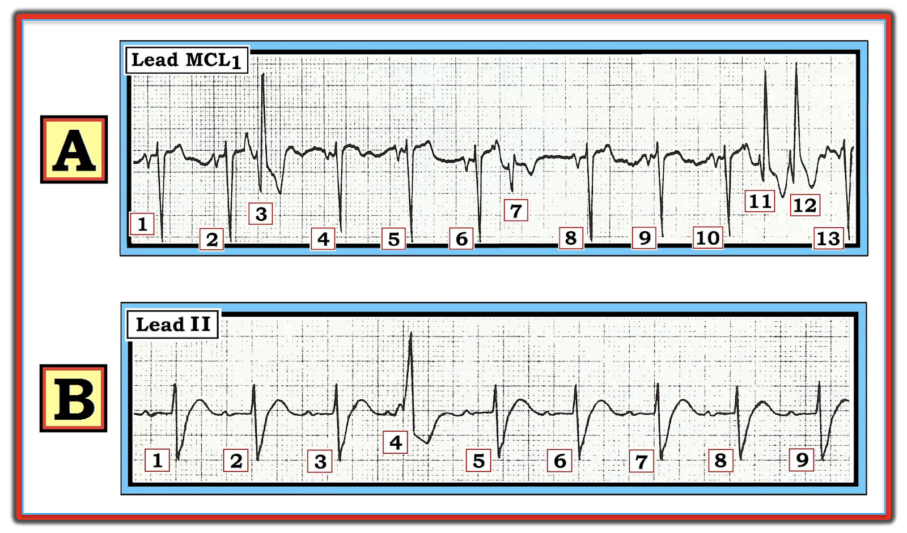
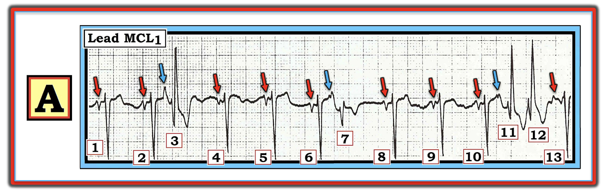
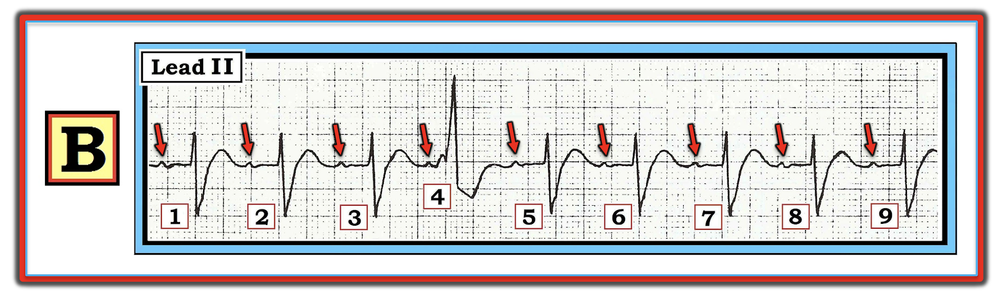
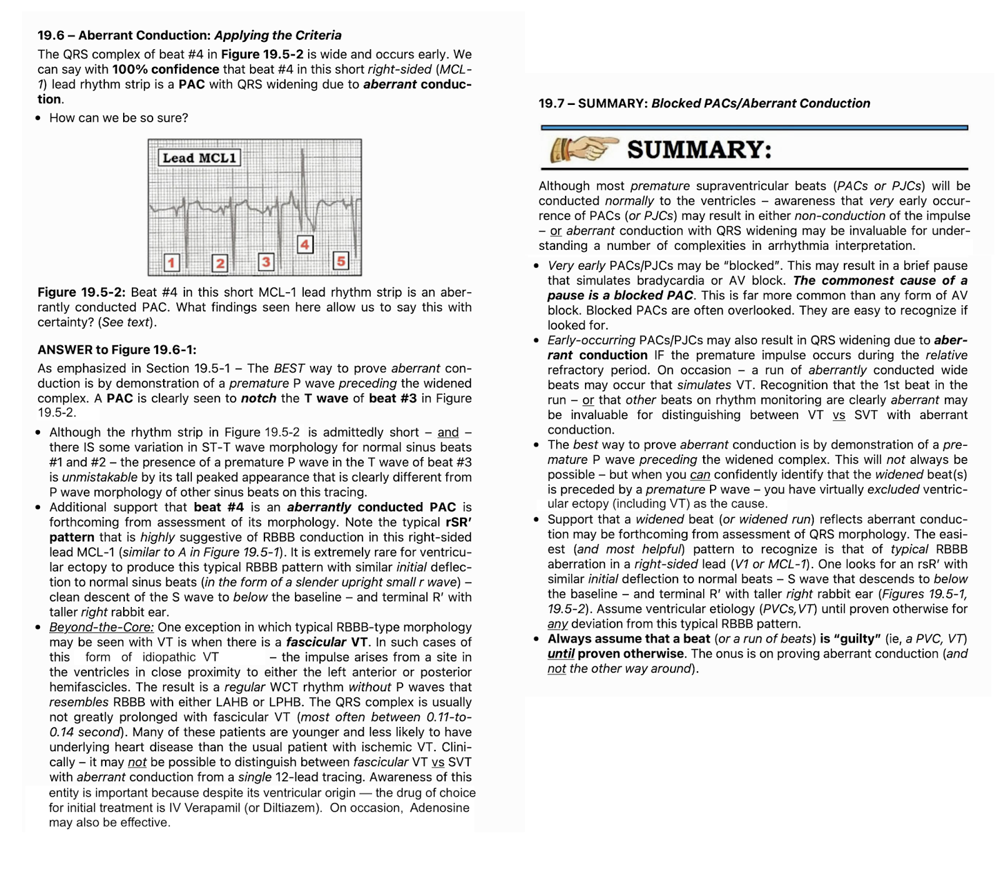

ECG Blog #211 — Vì sao lại dẫn truyền lệch hướng?
Hãy đọc 2 dải nhịp (rhythm strip) dưới đây trong Hình-1, sử dụng Cách tiếp cận Ps, Qs & 3R. Cả hai bệnh nhân đều ổn định huyết động.
- LƯU Ý #1: Chuyển đạo MCL-1 là một chuyển đạo theo dõi bên phải, cho góc nhìn tương tự như ở chuyển đạo V1 trên bản ghi 12 chuyển đạo. Và, mặc dù lý tưởng nhất là chúng ta có một điện tâm đồ 12 chuyển đạo đầy đủ để đánh giá nhịp — nhưng một chuyển đạo duy nhất được cung cấp ở đây vẫn cho đủ thông tin để trả lời Câu hỏi dưới đây.
CÂU HỎI: Các nhát trông khác biệt ở cả Bản ghi A và Bản ghi B đều có hình "tai thỏ". Phát biểu NÀO sau đây là đúng?
- a) Có dẫn truyền lệch hướng ở cả hai bản ghi.
- b) Dẫn truyền lệch hướng giải thích các nhát trông khác biệt ở A — nhưng không giải thích ở B.
- c) Dẫn truyền lệch hướng giải thích nhát trông khác biệt ở B — nhưng không giải thích các nhát trông khác biệt ở A.
- d) Không bản ghi nào có dẫn truyền lệch hướng. Các nhát trông khác biệt ở cả A và B đều là PVC.


=======================================
LƯU Ý #2: Đến đây, một số bạn đọc có thể muốn xem ECG Video PEARL dài 4:45 phút trước khi đọc Suy nghĩ của tôi về 2 nhịp trong Hình-1. Bạn có thể xem Suy nghĩ của tôi về các nhịp này vào bất kỳ lúc nào.
=======================================

ECG Media PEARL #28 (Video 4:45 phút) hôm nay — Ôn lại VÌ SAO một số nhát đến sớm và một số nhịp SVT được dẫn truyền lệch hướng (và vì sao dạng dẫn truyền lệch hướng thường gặp nhất biểu hiện hình thái RBBB).
- LƯU Ý #3: Tôi đã trích một bản tóm tắt 6 trang về Dẫn truyền lệch hướng từ cuốn ACLS-2013-ePub của tôi. Phần này có ở Phần bổ sung (trong Hình-4, -5 và -6) bên dưới.
- BẤM VÀO ĐÂY — để tải bản PDF 6 trang này về Dẫn truyền lệch hướng.
=======================================
SUY NGHĨ CỦA TÔI về Nhịp A trong Hình-1:
Có nhiều điều đang diễn ra trong Nhịp A. Trong những trường hợp như vậy — tôi thấy dễ nhất là trước hết tìm nhịp nền:
- Nhịp nền ở A là nhịp xoang — được xác định dựa vào các nhát #1, 2 — 4, 5, 6 — 8, 9, 10 và 13. Mặc dù hình thái QRS có thay đổi nhẹ (do nhiễu đường nền) — hẳn phải thấy rõ rằng với mỗi nhát trong 9 nhát kể trên, phức bộ QRS hẹp — khoảng R-R giữa các nhát này không đổi (và dài hơn 3 ô lớn một chút) — và có sóng P cùng hình thái với khoảng PR hằng định và bình thường (các mũi tên ĐỎ trong Hình-2). Do đó — có một nhịp xoang nền với tần số ~90-95/phút.


Phức bộ QRS của 4 trong 13 nhát ở nhịp A trông khác với 9 nhát dẫn truyền từ xoang. Có nhiều lý do để chúng ta có thể khẳng định chắc chắn 100% rằng các nhát #3, 7, 11 và 12 đều là PAC dẫn truyền lệch hướng.
- Các nhát #3, 7 và 11 đều có sóng P đến sớm (các mũi tên XANH nhạt) đi trước. Rõ nhất trong số các sóng P sớm này là mũi tên XANH thứ 1 (xuất hiện trước nhát #3) — chỉ vào một sóng P rất cao và nhọn. 2 mũi tên XANH tiếp theo (trước các nhát #7 và 11) khó thấy hơn — nhưng chỗ khía trong sóng T đến sớm và có hình thái khác hẳn, không thể nhầm lẫn, so với sóng P hai pha của các nhát xoang.
- Hình thái QRS của mỗi phức bộ QRS trông khác biệt ở A rất điển hình cho dẫn truyền kiểu RBBB vì: i) Chiều khởi đầu của QRS ở các nhát #3, 7, 11 và 12 là một sóng r nhỏ và mảnh — tương tự sóng r khởi đầu nhỏ ở các nhát dẫn truyền từ xoang; và, ii) Mỗi nhát trông khác biệt này đều có sóng S đi xuống dưới đường nền — và kết thúc bằng một phức bộ R’ cao và mảnh (tức là “tai thỏ” bên phải cao hơn).
- Lý do nhát #7 hẹp hơn một chút và không có sóng R’ cao — là vì PAC này dẫn truyền theo kiểu lệch hướng dạng RBBB không hoàn toàn (chứ không phải hoàn toàn).
- Để biết THÊM về hình thái QRS điển hình được mong đợi của dẫn truyền lệch hướng dạng RBBB — Xem các Mục 19.4, 19.5 và 19.6 trong Hình-5 và Hình-6 ở Phần bổ sung bên dưới.
- ĐIỀU CỐT LÕI: Nhịp ở A (như trong Hình-2) — là nhịp xoang kèm PAC dẫn truyền lệch hướng dạng RBBB.
SUY NGHĨ CỦA TÔI về Nhịp B trong Hình-1:
Chỉ có 1 nhát trông khác biệt trong Nhịp B ( = nhát #4).
- Một lần nữa — tôi thấy cách dễ nhất để đánh giá bản ghi này là tìm nhịp nền (Hình-3):


Có nhiều lý do cho thấy mặc dù nhát #4 có “tai thỏ” bên phải cao hơn — nhát này không phải là dẫn truyền lệch hướng. Thay vào đó — chúng ta gần như có thể khẳng định chắc chắn rằng nhát #4 ở B là một PVC.
- THỨ NHẤT — Sự hiện diện của “tai thỏ” chỉ có ích khi thấy ở một chuyển đạo bên phải (như chuyển đạo V1 trên bản ghi 12 chuyển đạo chuẩn — hoặc chuyển đạo theo dõi MCL-1). Phức bộ rR’ mà chúng ta thấy ở nhát #4 trong B không có giá trị chẩn đoán.
- Nhịp nền ở B là nhịp xoang với khoảng PR dài (các mũi tên ĐỎ trong Hình-3). Phức bộ QRS rộng (khoảng 0.12 giây) — nên có một dạng blốc nhánh nền nào đó. Tuy vậy — sự hiện diện của các sóng P dương xuất hiện đều đặn ở chuyển đạo II với khoảng PR hằng định (dù kéo dài) xác nhận rằng nhịp nền là nhịp xoang.
- ĐIỂM MẤU CHỐT: Sóng P đi trước nhát #4 không hề đến sớm — sóng P này ( = mũi tên ĐỎ thứ 4 trong Hình-3) xuất hiện chính xác đúng lúc! Lưu ý rằng khoảng PR trước nhát #4 rõ ràng ngắn hơn khoảng PR trước mỗi nhát dẫn truyền từ xoang trên bản ghi này. Điều đó có nghĩa là “một cái gì khác” (tức là một thứ phát sinh từ dưới nút AV) hẳn đã xảy ra trước khi sóng P đi trước nhát #4 kịp dẫn xuống thất — và tự điều đó đã chứng minh rằng nhát #4 phải là một PVC.
- Khác với tình huống ở nhịp A — khoảng ngưng chứa nhát trông khác biệt (tức là khoảng R-R giữa các nhát #3 đến 5) là khoảng nghỉ “bù” (tức là bằng đúng gấp đôi khoảng R-R của các nhát xoang bình thường). Khoảng R-R chứa PVC đơn lẻ thường (dù không phải luôn luôn) là khoảng nghỉ “bù” hoàn toàn — phản ánh thực tế là nhiều PVC không dẫn truyền ngược lên nhĩ để thiết lập lại nút SA. Điều này khác với những gì xảy ra với PAC — vốn thường xuyên thiết lập lại nút SA vì chúng phát sinh ngay trong nhĩ.
- Không có lý do gì để nhát #4 ở B dẫn truyền lệch hướng. Đó là vì nhát sớm này xuất hiện muộn trong chu kỳ (tức là khá lâu sau khi kết thúc sóng T của nhát trước). Các nhát dẫn truyền lệch hướng nói chung xuất hiện sớm hơn nhiều trong khoảng R-R, là lúc một phần hệ thống dẫn truyền có khả năng cao hơn nhiều vẫn còn đang trong thời kỳ trơ (như trường hợp các PAC dẫn truyền lệch hướng thấy ở nhịp A).
- Cuối cùng — hình thái QRS của nhát #4 ở nhịp B hoàn toàn khác với hình thái QRS của các nhát xoang bình thường. Đặc biệt lưu ý rằng chiều khởi đầu của nhát #4 (là một chiều dương khởi đầu nhỏ nhưng rộng và tròn) không hề giống sóng R khởi đầu mảnh hơn, dốc lên nhanh hơn và cao hơn thấy ở mỗi nhát dẫn truyền từ xoang.
- ĐIỀU CỐT LÕI: Gộp lại, các dấu hiệu nêu trên gợi ý rất mạnh rằng nhịp ở B (như trong Hình-3) — là nhịp xoang kèm blốc AV độ 1 và một PVC ( = nhát #4).
============================
PHẦN BỔ SUNG (ngày 5 tháng 4 năm 2021) Trong 3 Hình dưới đây — tôi đăng bản tóm tắt từ cuốn ACLS-2013-ePub của tôi về những điều cơ bản của Dẫn truyền lệch hướng.
- BẤM VÀO ĐÂY — để tải bản PDF 6 trang về những điều cơ bản của Dẫn truyền lệch hướng, được trình bày trong Hình-4, -5, -6.



==============================
Các bài ECG Blog liên quan đến Case hôm nay:
- ECG Blog #140 — Ví dụ về dẫn truyền lệch hướng kiểu blốc hai phân nhánh luân phiên.
- ECG Blog #14 — Ví dụ về PAC bị blốc.
- ECG Blog #15 — Ví dụ về WCT do Dẫn truyền lệch hướng.
- ECG Blog #33 — Ví dụ về PAC với các mức độ Dẫn truyền lệch hướng khác nhau.